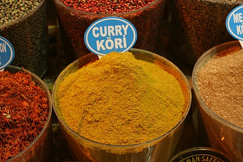
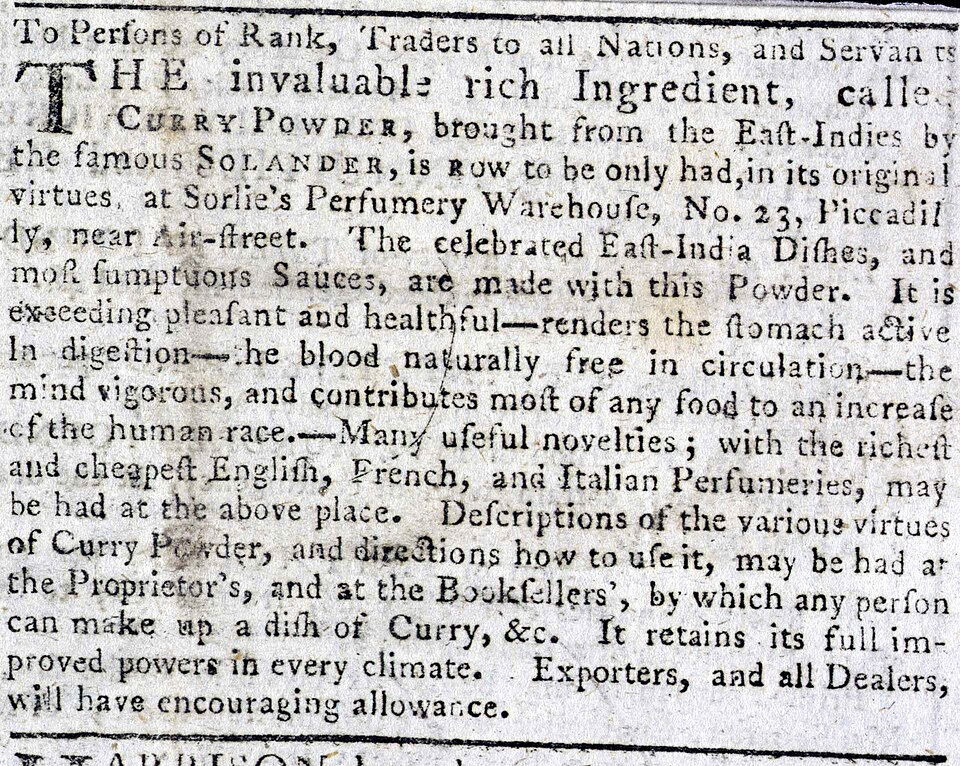

A quick historical note about the origins of curry powder:

Curry powder is a British invention, not a traditional Indian spice blend. It was created by British colonizers in the 18th century (first commercially sold in 1784) to replicate the complex flavors of Indian cuisine for European cooks who lacked access to fresh ingredients or the knowledge to mix spices from scratch.
Origin:
The blend was adapted from Indian garam masala but simplified into a single, all-purpose powder.
Key Ingredients:
It typically consists of turmeric, coriander, cumin, fenugreek, mustard, and black pepper.
Global Spread:
British traders introduced the powder to Japan in the 19th century, where it evolved into Japanese curry, and it later spread to the Caribbean, Africa, and Southeast Asia through colonial trade and indentured labor migration.

Distinctive Ingredients:
While the individual spices are native to the Indian subcontinent, the pre-mixed "curry powder" itself is an Anglo-Indian creation and is not used in authentic traditional Indian cooking.